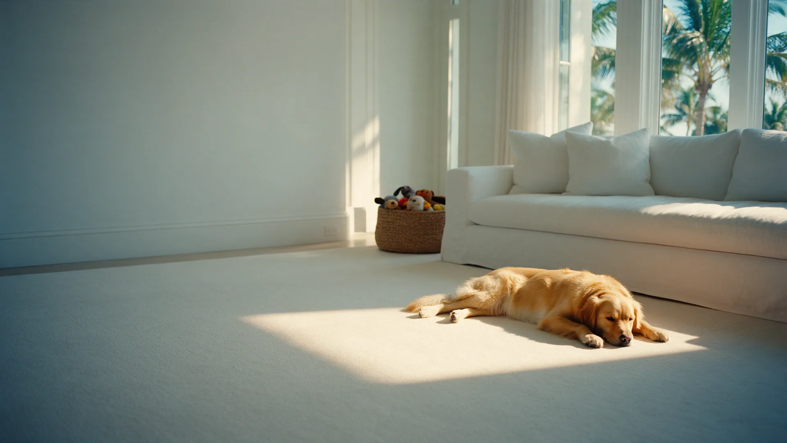
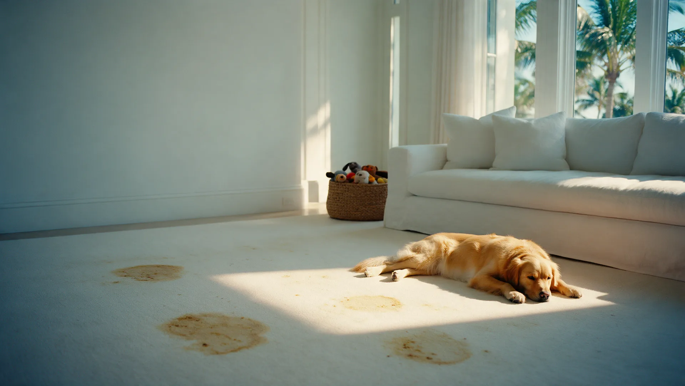
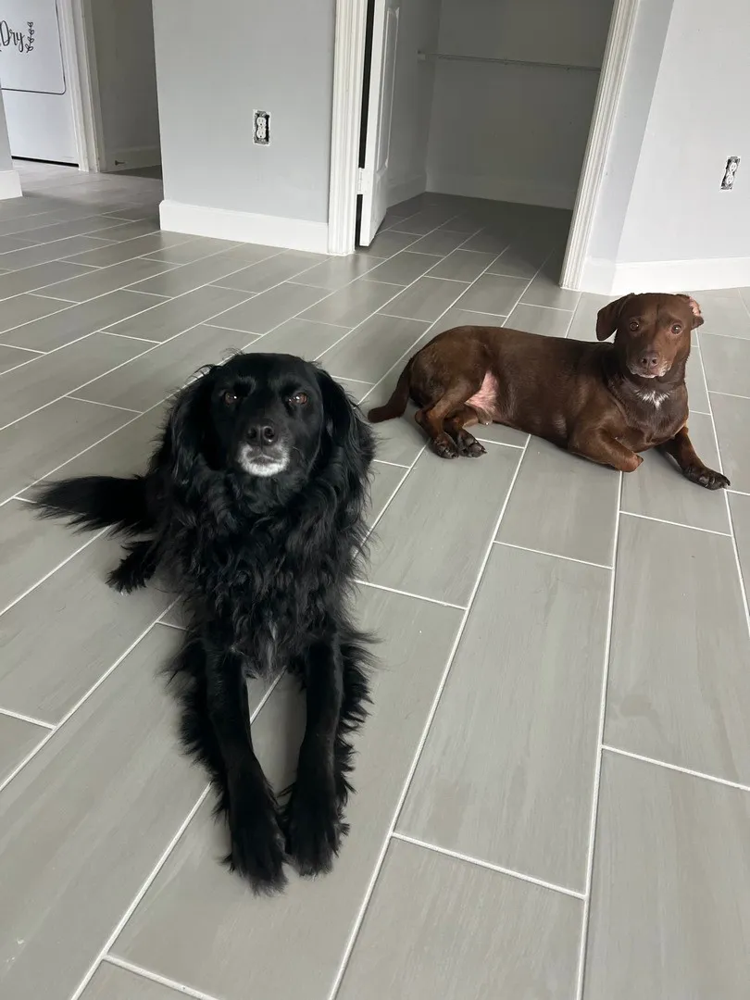
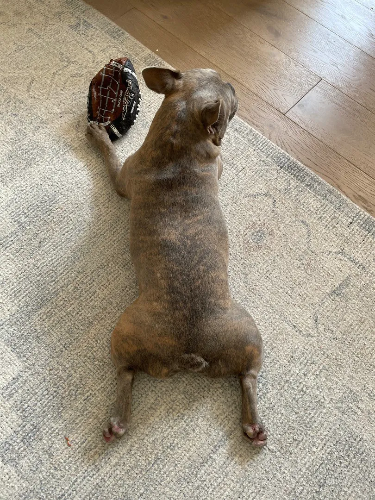
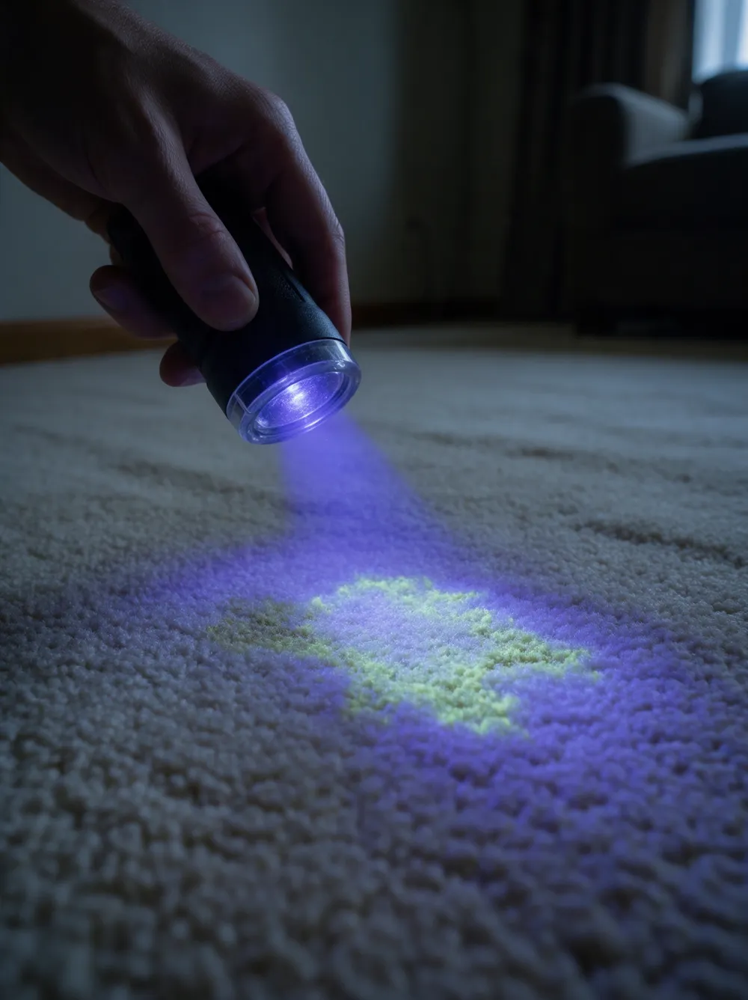

Pet stain & odor removal in Palm Beach County
The stains you can see and the odors you cannot. Found with UV light, broken down at the source, and safe for the whole family.
- 240five-star Google reviews
- 15+years in Palm Beach County
- 100%satisfaction guarantee
How does Harbor remove pet stains and odors?
Harbor uses enzyme-based cleaners that break down the bacteria behind pet odors at the source, instead of covering them with fragrance, and UV light to find hidden stains you cannot see in normal light.
Treatment reaches deep to neutralize urine and waste odors, the solutions are non-toxic and safe for pets and families, and it works on carpet, area rugs, upholstery, mattresses and tile and grout.

Drag to compare. An illustration of a family room carpet before and after pet stain and odor treatment.
Find it, break it down, clean it
Pet odors come from what soaks in below the surface. Each step goes after the source, not the smell.
Find
UV light reveals the stains you cannot see in normal light, so nothing is missed.
Treat
Enzyme-based cleaners break down the odor-causing bacteria at a molecular level.
Neutralize
Deep-penetrating treatment targets urine and waste odors where they have soaked in.
Clean
The surface is cleaned with the method that suits it, from carpet extraction to tile and grout cleaning.
Surfaces we treat
Wherever your pets go, the odors can follow.
- Carpet, including stairs and hallways
- Area rugs: wool, synthetic and oriental
- Upholstery and mattresses
- Tile and grout, where odors hide in porous grout
Real homes, real pets
Photographs taken by the Harbor crew in Palm Beach County homes, residents included.




Why pet odors keep coming back
What you smell is usually what you cannot see.
- It soaks in
- Urine spreads below the surface of carpet, rugs and grout, far beyond the spot you can see.
- Bacteria keep working
- Odor-causing bacteria keep breaking down what is left behind, so the smell returns long after the spot looks clean.
- Fragrance fades
- Sprays and deodorizers only cover the smell for a while. Humidity can bring it straight back.
Pet stain & odor questions, answered
Is pet stain and odor removal safe for my pets and kids?
Yes. Harbor uses non-toxic, pet-safe solutions that are gentle enough for every member of the household.
Can you find pet stains I cannot see?
Yes. Harbor uses UV light detection to reveal hidden pet stains that are invisible in normal light, so they can be treated too.
Do you just cover up the smell?
No. Enzyme-based cleaners break down the odor-causing bacteria at the source, rather than masking the smell with fragrance.
What surfaces can you treat for pet stains and odors?
Carpet, area rugs including wool, synthetic and oriental, upholstery and mattresses, and tile and grout, where odors can become trapped in porous grout.
Can pet odors be removed from tile and grout?
Yes. Grout is porous and can hold pet odors, so it is treated along with the tile surface.
How much does pet stain and odor removal cost?
Every quote is personalized, because cost depends on the surfaces, the size of the affected areas and how old the stains are. Request a free personalized quote online or call or text (561) 301-1977.
Is there a guarantee?
Yes. Harbor's pet stain and odor removal is backed by a 100% satisfaction guarantee.
Pet stain & odor removal near you
- Jupiter
- Palm Beach Gardens
- Palm Beach Island
- West Palm Beach
- Wellington
- Boynton Beach
- Delray Beach
- Boca Raton
- Deerfield Beach
Get a Personalized Quote for pet stain & odor removal
Tell us where the stains and odors are and we will get back to you with a personalized estimate. Prefer to talk? Call or text (561) 301-1977.
Your request is ready.
Send it to Harbor by text or email. Nothing is sent until you choose.
Text it to Harbor Email it instead